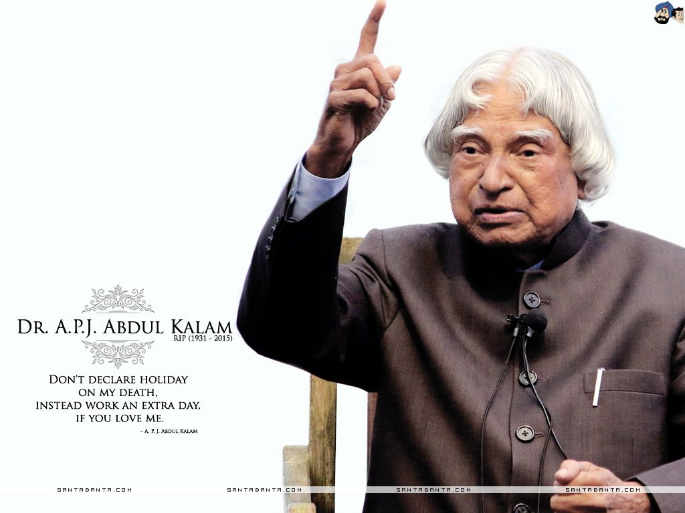
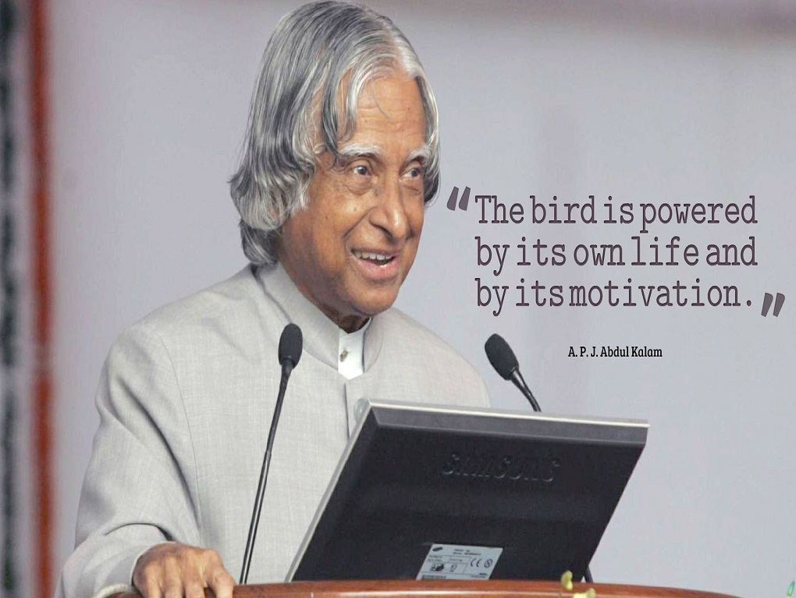

The Missile Man of India



A.P.J Abdul Kalam Giving Speech
Here is a timeline of A.P.J. Abdul Kalam(1931-2015)
- 1931 - Born on October 15, 1931, at Rameshwaram.
- 1955 - Kalam moved to Madras to study aerospace engineering in Madras Institute of Technology.
- 1958 - Specialized in aero-engineering from the Madras Institute of Technology
- 2015- Dies at the age of 83.
List of honors and awards received by A. P. J. Abdul Kalam
Honorary Degrees- Distinguished Fellow – Institute of Directors, India, 1994[2]
- Honorary Fellow – National Academy of Medical Sciences, 1995[3]
- Honorary Doctor of Science – University of Edinburgh, Scotland, 2014[2]
Awards
- 1981:Padma Bhushan – Government of India
- 2013: Von Braun Award – National Space Society[3]